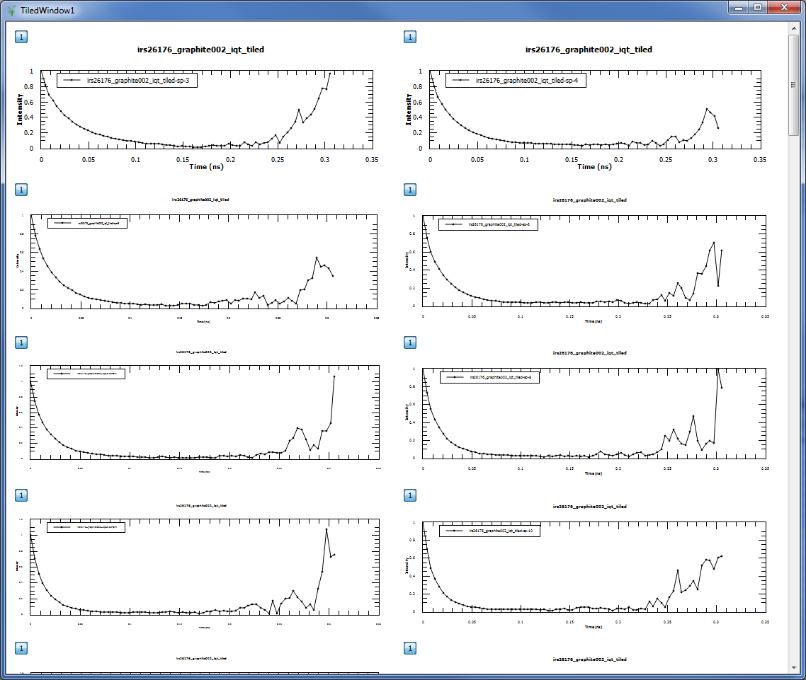

Indirect Inelastic Changes#
New features#
Algorithms#
SwapWidthsThis algorithm is to be used on a BayesQuasi widths workspace where the 2 widths cross over for ascending Q value. The swap point is selected and a new workspace created which is then suitable for use in JumpFit.
Corrections#
Container Subtraction#
Added new
Shift x-values of container by addingoption to allow for the use of non aligned peak centres between Sample and Container.
Apply PaalmanPings#
Added new
Shift x-values of container by addingoption to allow for the use of non aligned peak centres between Sample and Container.
Absorption#
Added new
Shift x-values of container by addingoption to allow for the use of non aligned peak centres between Sample and Container.
Data Analysis#
ConvFit#
Mini plot shows a curve for the Diff after fitting the model as well as the fitted data in the interface
After selecting
Usein the parameter underDelta Function, this now displays the centre of the Delta Function
I(Q,t)#

TiledPlot for I(Q,t) interface in the Data Analysis tab#
I(Q,t) now has a Tile Plot option that allows you to plot all the spectra in the output in a tile view.
I(Q,t) Fit#
I(Q,t) Fit now plots the Diff after fitting the model as well as the fitted data in the mini plot within the interface.
Data Reduction#
ILL Energy Transfer#
Changed IndirectILLReduction algorithm to support the new format for raw
.nxsfiles.
Diffraction#
OSIRIS DiffOnly diffraction now allows for the user to specify a range of spectra (spectra min /spectra max)
Improvements#
Progress Tracking#
Many of the algorithms in Mantid have been given progress tracking. This means that it is now easy to see the progress of an algorithm while it is running in terms of percentage of completion and labels detailing the current process. You can also cancel these algorithms while they are running. So far the algorithms that have been given progress tracking include:
ApplyPaalmanPingsCorrectionsBayesQuasiConvolutionFitSequentialCylinderPaalmanPingsCorrectionEVSDiffractionReductionFlatPlatePaalmanPingsCorrectionIndirect CalibrationIndirect Energy TransferIndirect ResolutionPlotPeakByLogValueResNormSofQWMomentsSymmetriseTimeSliceTransformToIqt
Mantid Algorithms#
BayesQuasi (previously in IndirectBayes.py) has been adapted to be a Mantid algorithm. This has not effected the way this script is used in the Indirect Bayes: Quasi tab, but it does now have a dialogue box interface from the algorithm list as well. This also allows for better testing and progress tracking of the algorithm.
Validation#
Empty data input fields now have a better error message (this was previously blank)
ISIS Energy TransferData is now validated in Removal of Background (TOF) to ensure that data in for Start and End is within the data range for the ToF of the raw file.
Rebin Width can now be negative indicating a logarithmic binning this was the default case for TOSCA and TFXA but the validation was stopping this in the case of TFXA
PlotTime spectra is validated to ensure it can not load Spectra outside of the possible range for the current instrument
ContainerSubtractionAdditional validation to ensure that the number of histograms in the sample are the same as the number of histograms in the container
QuasiInterface now has additional validation to ensure that the current default save directory is set and if not, the user is asked if using the current working directory is ok.
EMin/Emax validation to ensure that EMin < EMax
ConvFitInterface now ensures that if temperature correction is checked in the interface then a value must be provided in the corresponding input field.
ResNormNo longer causes a crash in Mantid when run with no input files provided for Resolution or Vanadium
EMin/Emax validation to ensure that EMin < EMax
AbsorptionInterface now has validation to ensure the chemical formula entered for the sample and the container are valid.
CalculatePaalmanPingsInterface now has validation to ensure the chemical formula entered for the sample and the container are valid.
Workflow diagrams#
Several additional workflow diagrams have been added to the documentation of algorithms. These algorithms include:
TOSCABankCorrectionIndirectFlatPlateAbsorptionIndirectCylinderAbsorptionIndirectAnnulusAbsorptionEVSDiffractionReductionMuscatSofQWOSIRISDiffractionReductionFlatPlatePaalmanPingsCorrectionFuryFitMultipleProcessIndirectFitParameters
Misc#
The naming convention used for files produced in Indirect Corrections has been updated to be more informative of what changes took place.
The naming convention for files that are loaded in the Indirect Data Reduction section has been changed to ensure consistency. It is now
[full instrument name] + [run number] + _ + [analyser] + [reflection] + _red- This should all be lower case and any leading zeros should be removed.FABADAFor most of our applications the MaxIterations parameter should be at least 1e6, the new default value. This is now properly passed through to the PlotPeakByLogValue algorithm for sequential fitting.
Multi Data Set FittingMany additions and corrections. This gives more functionality than the ConvFit interface.
Bugfixes#
Major#
Added Height of Delta function to the property table in ConvFit tab when it is in use.
Include
_redat the end of files produced in Indirect Corrections so they can be used in other interfaces.ResNorm should no longer have issues running/saving files when the
Resolutioninput is a workspace not a file.Files for the
IN16Binstrument at the ILL no longer cause Mantid to crash when loaded and now can be used inConvFit.It should now be possible to save workspaces from the output of
I(Q, t)regardless of the name of Input workspaces.In
ConvFitthe resolution workspace is now extended to match the number of spectra in the sample workspace when the algorithm is run rather than when the workspaces are loaded. This makes ConvFit more robust when the interface is being manipulated quickly.Remove the auto-running of various interfaces including:
ISIS Diagnostics,MomentsandJumpFitwhen variables in the property tree are changed.The
ContainerSubtractioninterface now allows for_multi_files to be used (those which are reduced from multiple run numbers). This was previously being incorrectly stopped due to validation.The
Quasiinterface now works correctly with_ResNormfilesIt is once again possible to Load
_sqwfiles in to the ConvFit interface
Minor#
In the Indirect Data Reduction tab,
Removal of Background (ToF)is now also validated when Plot Time is called not only on a call to Run.Ensure that the spectra range in ConvFit maps correctly onto the fitted workspaces in the workspace group when plotting in the mini plot.
Further improved Sample logs in Corrections to include shift of Container.
The curve that represents the Container plotted in the mini plot in ContainerSubtraction now scales accordingly with the
Scale Container by factoroption in the interface.Fold Multiple Framesis no longer checked by default for IRIS and OSIRIS in ISIS Energy Transfer.Reduced the number of calls to the
FileFinderinLoadVesuvio.The plot options in
I(Q, t) Fithave been reordered to be consistent with other interfaces in Indirect.Ensured
FWHMandFitting Rangein the plot and parameter tree inConvFitupdate automatically based on the resolution of the instrument in the IDF and the range of the data being fitted in the mini plot.ResNormcan now accept files of the old or new naming convention. It even works with a combination of the two.ProcessIndirectFitParametersalgorithm no longer produces a__TMPworkspace when executed.Absorption Correctionsinterface now has improved default values forScale(1.000) andShift(0.000).Momentsinterface now has an improved default value forScale(1.000).ConvFitPlots the Diff of Fit Single Spectrum
Improved default values for many of the properties in the property tree. They now default to 1 rather than 0.
Does not crash if you change fit type or Plot Single Spectrum without data input files